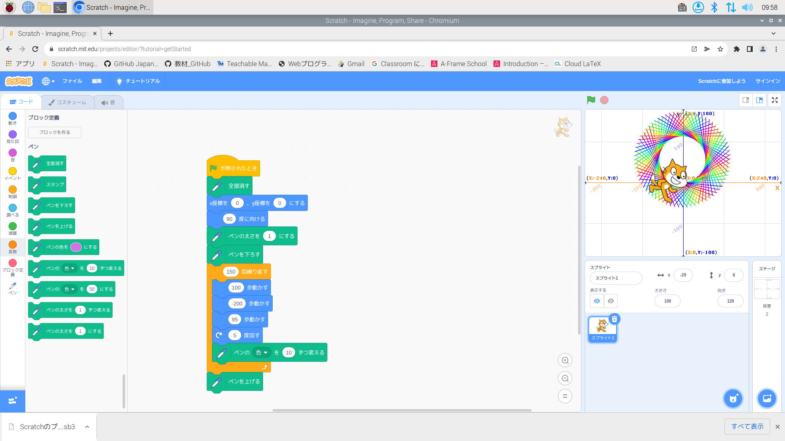
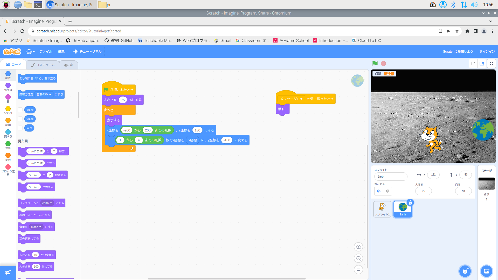
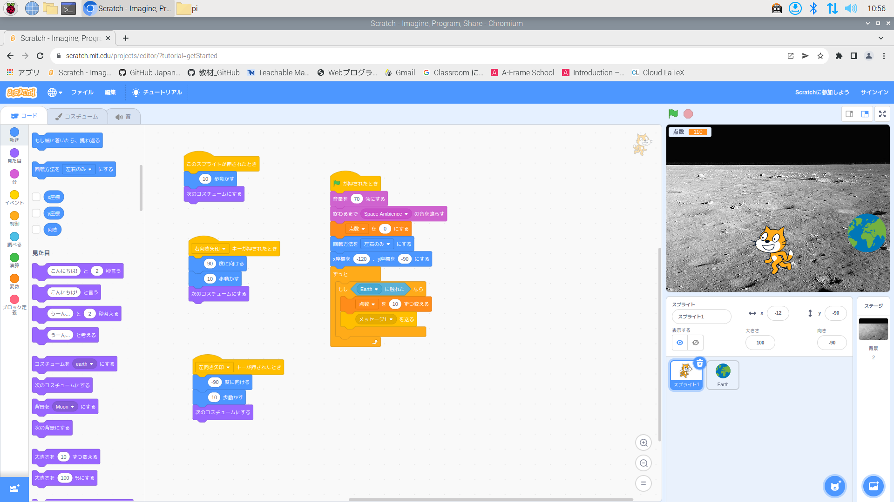

1週目のレポート ： 公大高専１年実習I-1
1組20番 hotaru2
第1週目
1-1 サイエンスアート

1.内容
スクラッチを使って線を書くプログラムを書いた。
2.感想
先週まで、エレクトロニクスコースの実習でmicro.bitを用いて、makecodeを使ってプログラミングを学んでいて、今回はScratchを用いたものだったが、 両方ブロックを使うので、同じような感覚で行うことができた。また、ブロックの数値を変えることで全く違う感じになって面白かった。
1-2 ゲーム
 
1.内容
落ちてくるものに触れて点数を稼ぐゲームのプログラムを作った。
2.感想
ゲームを作る側になったのは初めてで手順を進めるごとにゲーム性が向上していていま自分が楽しんでいるゲームはすごい労力がいるんだなと感じた。
1-3 ホームページ作成
私のホームページ
1.内容
githubを使って自分のホームページを作った。
2.感想
慣れない作業が多かったのでスクラッチよりも難しいと感じた。でも、その分無事にホームページが作れたら達成感があった。